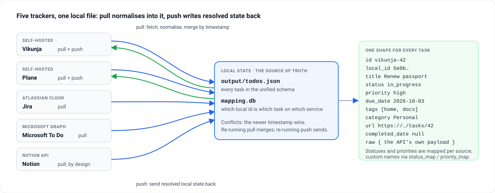

Command-line tool · Python · MIT
Every task list you have, in one file you own.
Work is in Jira, the team board is in Plane, the family list is in Microsoft To Do, notes with checkboxes are in Notion, and the self-hosted Vikunja was supposed to replace them all. todo-harvest pulls every one into one file in one schema, resolves conflicts by timestamp, and pushes the result back to the services that accept writes — no daemon, no account, one command at a time.

Nothing polls and nothing runs in the background. Local state is the source of truth: a pull never overwrites a newer local edit, and a push never invents a task on a service that has no mapping unless you set a default project.
One schema
id, title, status, priority, dates, tags, category, url — the same record whatever the source, and the service's own payload kept whole under raw.
Pull from five, push to two
Vikunja, Plane, Jira, Microsoft To Do and Notion in; Vikunja and Plane out. Jira and To Do pushes are not implemented yet, Notion is pull-only by design.
Conflicts by timestamp
An incoming task with a newer updated_date replaces the local copy; an older one is ignored. No merge dialogs.
Stable ids across services
mapping.db assigns one local_id on first sight and remembers which id the task has on each service, so a task created by a push is recognised on the next pull.
Your vocabulary
status_map, priority_map and Notion field_map for instances with their own status names, priorities and column titles.
Explicit runs
pull, push and sync do exactly what they say; inspect and export never touch the network.
How a sync runs
A pull, then a push; each step does one thing.
- Fetch
Each configured source is queried through its own client — REST with three retries and exponential backoff. Jira uses the configured JQL; Notion, the listed databases; Plane, the listed or all projects.
- Normalise and map
Every item becomes the unified record, status and priority mapped to the common values.
mapping.dbassigns a stablelocal_idon first sight. - Merge
A newer
updated_datethan the local copy replaces it; an older one is ignored. The result is written tooutput/todos.json. - Push
Tasks with a mapping on the target are updated in place; tasks from other sources are created there only if
default_project_idis set. A new task's service id goes intomapping.db.
Quick start
Python 3; ./ctl creates a virtual environment on first run and installs the dependencies. On Windows, harvest.ps1 takes the same arguments from PowerShell.
Run it
git clone https://github.com/mmdemirbas/todo-harvest.git && cd todo-harvest
cp config.example.yaml config.yaml # fill in the services you use
./ctl pull # everything into output/todos.json
./ctl push vikunja # local state back to Vikunja
./ctl sync # pull all, then push allOnly configure the services you use; the rest are skipped. Each needs one token — the README walks through each service.
config.yaml, the shape
vikunja:
base_url: "http://localhost:3456"
api_token: "YOUR_API_TOKEN"
# default_project_id: 1 # to create cross-source tasks here
jira:
base_url: "https://YOUR_SUBDOMAIN.atlassian.net"
email: "your@email.com"
api_token: "YOUR_API_TOKEN"
# status_map: { "Custom Status": "in_progress" }
notion:
token: "YOUR_INTEGRATION_SECRET"
database_ids: ["DATABASE_ID_1"]
# field_map: { status: "Status", due_date: "Due Date" }config.yaml holds the tokens and is git-ignored; config.example.yaml is the template.
Commands
| Command | Network | Does |
|---|---|---|
./ctl pull [source…] | yes | Pull from every configured service, or the named ones, and merge |
./ctl push vikunja / plane | yes | Push local state to one target |
./ctl sync | yes | Pull all, then push all |
./ctl inspect projects [source] | no | Project / list / database ids — for default_project_id |
./ctl inspect stats | no | Task counts, field coverage, date ranges |
./ctl inspect fields jira | no | The status, priority and tag values a source uses |
./ctl export [--output-dir DIR] | no | Snapshot local state to JSON and CSV |
./ctl test | no | Tests with a coverage report |
The unified schema
Every task becomes the same record; the source's full payload stays under raw.
| Field | Type | Meaning |
|---|---|---|
id, local_id | string | {source}-{source_id}, and the stable UUID assigned on first pull |
source | string | vikunja, plane, jira, mstodo or notion |
title, description | string | The task and its body |
status | enum | todo, in_progress, done, cancelled |
priority | enum | critical, high, medium, low, none |
created_date, due_date, updated_date, completed_date | ISO 8601 | Timestamps; completed_date from each service's own field, null for Notion |
tags, category, url | list, object, string | Labels or list names; the organisational container; a link back to the original |
raw | object | The original API payload — Jira's ADF description and custom fields, To Do's checklist items, every Notion property |
What pushes back
rw is pull and push; pull is pull only.
| Field | vikunja | plane | jira | mstodo | notion |
|---|---|---|---|---|---|
| title, description | rw | rw | pull | pull | pull |
| priority, due_date | rw | rw | pull | pull | pull |
| status | rw | pull | pull | pull | pull |
| tags, category | rw | pull | pull | pull | pull |
What lives where
| File | Holds | Commit it? |
|---|---|---|
config.yaml | Tokens and per-service options | No — it is in .gitignore |
output/todos.json | Every task in the unified schema, the local source of truth | Your call; it is your task list |
mapping.db | SQLite: local id ↔ service id per source | Keep it with todos.json; deleting it re-maps everything on the next pull |
output/*.csv, *.json | Export snapshots for spreadsheets or other tools | No |